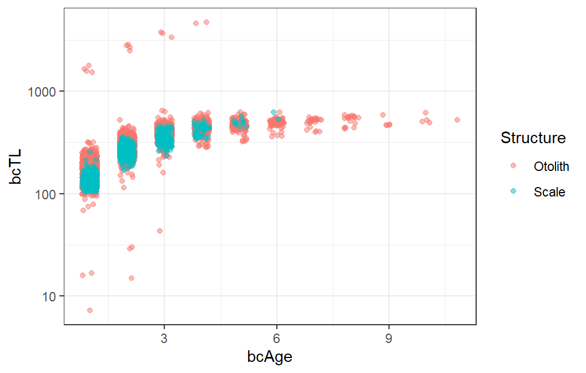
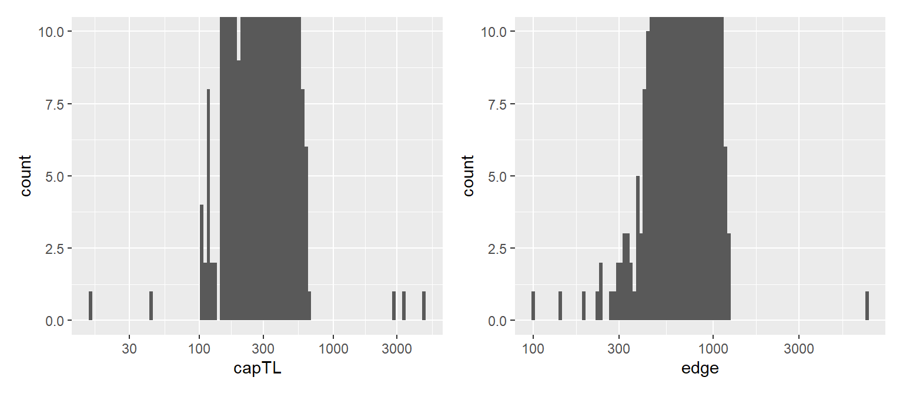
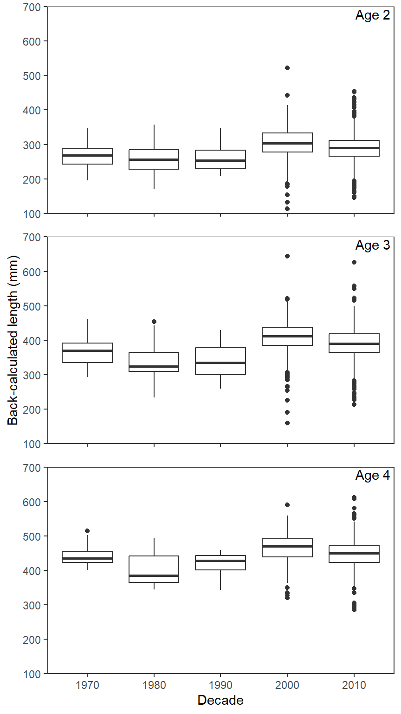
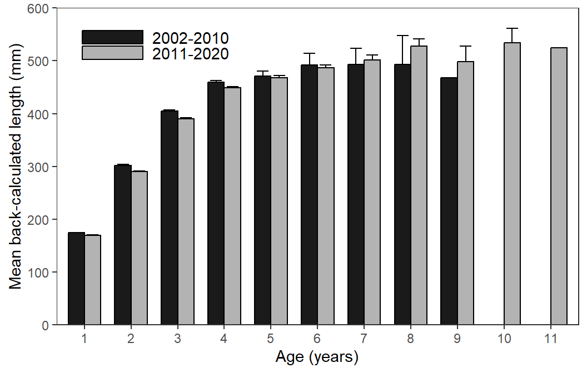

library(tidyverse) # for dplyr, ggplot2 packages
Series Note
This is the fifth, and last, of several posts related to McCarrick et al. (2022). I thank the authors for making their data available with their publication.
Introduction
McCarrick et al. (2022) examined the population dynamics of Yellowstone Cutthroat Trout (Oncorhynchus clarkii bouvieri) in Henrys Lake, Idaho over a nearly two decade period. Their Figure 6 showed the back-calculated total length of both Cutthroat Trout at three ages separated by decade and their Figure 7 showed the mean (and SE) back-calculated TL at age for two time periods. I use ggplot2 here to recreate both figures.
The following packages are loaded for use below. A few functions from each of readxl, FSA, scales, and lemon are used with :: such that the entire packages are not attached here.
Note
You will see below that I could recreate the structure but not the exact results of the author’s Figure 6 or Figure 7. This may be due to issues present in the data provided with the publication that I discuss below, but it could also be that my data wrangling differs from theirs. I defer to the authors here as they are the experts with their data; I am just an interloper. I actually appreciate these data issues from an educational perspective as they provide rich opportunities to demonstrate a variety of techniques with “real” “messy” data.
Data Wrangling
Reading Excel File and Handling Some Initial Issuees
McCarrick et al. (2022) provided raw data for these figures as an Excel file in their Data Supplement S2. An initial glance at the Excel file revealed that every other line in the file was essentially a header line for the annular measurements on the scales or otoliths.1 Fortunately, when these data were read in below, those lines appeared as missing data for the age-at-capture variable (as well as several others). Thus, I immediately removed rows with missing values in the age-at-capture variable. The variable names in Excel were also longer than I prefer so I renamed the variables that I chose to retain.
1 This was not immediately obvious in the Excel file as a filter had been applied to hide those rows. I had to remove the filter in Excel to see the issue.
dat <- readxl::read_excel("Download.xlsx") |>
select(Year,ID=Fish_Number,Structure,capAge=Age_at_Capture,capTL=Total_Length_mm,
edge,starts_with("annulus")) |>
filter(!is.na(capAge))
FSA::headtail(dat)#R| Year ID Structure capAge capTL edge annulus1 annulus2 annulus3 annulus4
#R| 1 2020 143 Otolith 3 402 982 464 754 982 NA
#R| 2 2020 122 Otolith 2 266 692 428 692 NA NA
#R| 3 2020 1599 Otolith 2 452 994 702 994 NA NA
#R| 3257 1987 NA Scale 2 240 435 155 352 NA NA
#R| 3258 1987 NA Scale 3 305 531 137 331 431 NA
#R| 3259 1987 NA Scale 3 453 695 145 338 537 NA
#R| annulus5 annulus6 annulus7 annulus8 annulus9 annulus10 annulus11
#R| 1 NA NA NA NA NA NA NA
#R| 2 NA NA NA NA NA NA NA
#R| 3 NA NA NA NA NA NA NA
#R| 3257 NA NA NA NA NA NA NA
#R| 3258 NA NA NA NA NA NA NA
#R| 3259 NA NA NA NA NA NA NAThese data are in what I call “one-fish-per-line” format. This is the “tidy” format for performing analyses on a fish, but it is not in a “tidy” format for performing analyses on lengths at specific ages. This will become more evident in the following sections.
For consideration below, note that Structure contains only Scale and Otolith.
unique(dat$Structure)#R| [1] "Otolith" "Scale"Back-Calculation
The authors used the Dahl-Lea method of back-calculation for otoliths and the Fraser-Lee method for scales.2 The length adjustment term in the Fraser-Lee method came from the intercept of the regression of length-at-capture on scale radius-at-capture. This regression is performed using the “per fish” data in dat, but filtered to only the data from scales. The intercept is extracted from the regression results and stored in a for use below.
LonR <- lm(capTL~edge,data=filter(dat,Structure=="Scale"))
( a <- coef(LonR)[["(Intercept)"]] )#R| [1] 54.99758Back-calculating length at a previous age requires the data to be in a “one-annulus-per-line” format. For this purpose, the data in dat is considered “wide” (annuli are in multiple columns of each row) and need to be “pivoted” to “long” format with pivot_longer(). The columns that contain the annular measurements are given to cols=, values_to= gets a name for the column to contain these annular measurements, and names_to= gets a name for the column to contain the “label” for the annular measurements. The new bcAge variable (from names_to=) will contain the old columns names (i.e., “annulus 1”, “annulus 2”, etc.) by default. names_prefix= is used below to remove “annulus” from these labels and leave just the numeric age labels (e.g., “1”, “2”, etc.). The age “labels” are converted to numeric values with as.numeric() in mutate(). Finally, many rows in the new Radius variable will be missing because annular measurements were not made for ages older than the age-at-capture for the fish (e.g., Radius will be missing for all ages greater than 3 for an age-3 fish). These rows are removed with filter() below.
dat2 <- dat |>
pivot_longer(cols=annulus1:annulus11,values_to="Radius",
names_to="bcAge",names_prefix="annulus") |>
mutate(bcAge=as.numeric(bcAge)) |>
filter(!is.na(Radius))
FSA::headtail(dat2)#R| Year ID Structure capAge capTL edge bcAge Radius
#R| 1 2020 143 Otolith 3 402 982 1 464
#R| 2 2020 143 Otolith 3 402 982 2 754
#R| 3 2020 143 Otolith 3 402 982 3 982
#R| 8754 1987 NA Scale 3 453 695 1 145
#R| 8755 1987 NA Scale 3 453 695 2 338
#R| 8756 1987 NA Scale 3 453 695 3 537This data frame is now prepared to back-calculate lengths at previous ages from the measurements in Radius, the structure size-at-capture in edge, and the fish’s length at capture in capTL. This calculation is somewhat complicated by the fact that different back-calculation equations are used depending on the structure examined. This is handled below using case_when() within mutate().
dat2 <- dat2 |>
mutate(bcTL=case_when(
Structure=="Scale" ~ ((capTL-a)/edge)*Radius+a,
Structure=="Otolith" ~ capTL*Radius/edge
))
FSA::headtail(dat2)#R| Year ID Structure capAge capTL edge bcAge Radius bcTL
#R| 1 2020 143 Otolith 3 402 982 1 464 189.9470
#R| 2 2020 143 Otolith 3 402 982 2 754 308.6640
#R| 3 2020 143 Otolith 3 402 982 3 982 402.0000
#R| 8754 1987 NA Scale 3 453 695 1 145 138.0341
#R| 8755 1987 NA Scale 3 453 695 2 338 248.5585
#R| 8756 1987 NA Scale 3 453 695 3 537 362.5189At this point, I felt the need to see if these calculations “worked.” I made a plot of back-calculated length-at-age and noticed that most results were reasonable, but there were a handful of VERY large back-calculated lengths. This seemed like date error rather than systematic calculation error. I was further concerned that there may be errors of very low back-calculated lengths; thus, I used a log scale for the y-axis.
ggplot(data=dat2,mapping=aes(x=bcAge,y=bcTL,color=Structure)) +
geom_jitter(width=0.2,height=0,alpha=0.5) +
scale_y_continuous(trans="log10") +
theme_bw()
The large back-calculated lengths were from four individual fish, three of which had lengths-at-capture that were clearly errors (i.e., capTL over 2000 mm). Additionally, at least two of the small back-calculated lengths were from errors in length-at-capture (i.e., capTL less that 50 mm). A few of the other problems appeared related to bad edge measurements.
dat2 |> filter(bcTL>1000)#R| # A tibble: 13 × 9
#R| Year ID Structure capAge capTL edge bcAge Radius bcTL
#R| <dbl> <dbl> <chr> <dbl> <dbl> <dbl> <dbl> <dbl> <dbl>
#R| 1 2012 2055 Otolith 2 2778 665 1 394 1646.
#R| 2 2012 2055 Otolith 2 2778 665 2 665 2778
#R| 3 2009 208 Otolith 3 3370 740 1 344 1567.
#R| 4 2009 208 Otolith 3 3370 740 2 547 2491.
#R| 5 2009 208 Otolith 3 3370 740 3 740 3370
#R| 6 2008 69 Otolith 4 4692 925 1 352 1785.
#R| 7 2008 69 Otolith 4 4692 925 2 531 2693.
#R| 8 2008 69 Otolith 4 4692 925 3 726 3683.
#R| 9 2008 69 Otolith 4 4692 925 4 925 4692
#R| 10 2004 1098 Otolith 4 460 100 1 333 1532.
#R| 11 2004 1098 Otolith 4 460 100 2 619 2847.
#R| 12 2004 1098 Otolith 4 460 100 3 811 3731.
#R| 13 2004 1098 Otolith 4 460 100 4 1000 4600dat2 |> filter(bcTL<80)#R| # A tibble: 10 × 9
#R| Year ID Structure capAge capTL edge bcAge Radius bcTL
#R| <dbl> <dbl> <chr> <dbl> <dbl> <dbl> <dbl> <dbl> <dbl>
#R| 1 2014 19 Otolith 2 145 610 1 313 74.4
#R| 2 2008 257 Otolith 2 15 667 1 321 7.22
#R| 3 2008 257 Otolith 2 15 667 2 667 15
#R| 4 2006 149 Otolith 3 43 938 1 363 16.6
#R| 5 2006 149 Otolith 3 43 938 2 636 29.2
#R| 6 2006 149 Otolith 3 43 938 3 938 43
#R| 7 2007 319 Otolith 2 302 7110 1 374 15.9
#R| 8 2007 319 Otolith 2 302 7110 2 710 30.2
#R| 9 2004 135 Otolith 3 160 986 1 482 78.2
#R| 10 2004 218 Otolith 3 190 841 1 305 68.9I examined the length-at-capture and radius-at-capture data more closely.
ggplot(data=dat,mapping=aes(x=capTL)) +
geom_histogram(bins=100) +
scale_x_continuous(trans="log10") +
coord_cartesian(ylim=c(0,10))
## <100 and >1000 seem to be errors
ggplot(data=dat,mapping=aes(x=edge)) +
geom_histogram(bins=100) +
scale_x_continuous(trans="log10") +
coord_cartesian(ylim=c(0,10))
## <200? and >1500 seem to be errors
From this analysis, it seems that lengths-at-capture less than 100 mm and greater than 1000 mm are data errors. In addition, it seems that edge measurements of less than 200 and greater than 1500 are also data errors. If I had access to the original records, I would attempt to determine if these are data entry errors and fix them. I don’t have that access, so I deleted fish with these measurements from the dat data frame.
dat <- dat |>
filter(capTL>100,capTL<1000) |>
filter(edge>200,edge<3000)Because the original dat data frame has now been altered, the regression and creation of dat2 above needed to be repeated before continuing. I did not show the repeated code here.
#R| Year ID Structure capAge capTL edge bcAge Radius bcTL
#R| 1 2020 143 Otolith 3 402 982 1 464 189.9470
#R| 2 2020 143 Otolith 3 402 982 2 754 308.6640
#R| 3 2020 143 Otolith 3 402 982 3 982 402.0000
#R| 8732 1987 NA Scale 3 453 695 1 145 139.1931
#R| 8733 1987 NA Scale 3 453 695 2 338 249.3108
#R| 8734 1987 NA Scale 3 453 695 3 537 362.8518
Recreating Figure 6
A decade variable is added to dat2 and the data was reduced to only age-2 to age-4 fish, as those were the only ages used in Figure 6.
dat3 <- dat2 |>
mutate(Decade=floor(Year/10)*10,
Decade=ifelse(Decade==2020,2010,Decade),
Decade=factor(Decade)) |>
filter(bcAge>=2,bcAge<=4)Figure 6 is a boxplot that can be produced with geom_boxplot(), with Decade mapped to the x-axis and bcTL mapped to the y-axis. Note that the x-axis variables should not be numeric, which is why Decade was converted to a factor above. Because of this, the x-axis is modified with scale_x_discrete() rather than scale_x_continuous(). The rest of functions used here were described in the previous posts related to McCarrick et al. (2022).
ggplot(data=dat3,mapping=aes(x=Decade,y=bcTL)) +
geom_boxplot() +
geom_text(mapping=aes(label=paste("Age",bcAge)),check_overlap=TRUE,
x=Inf,y=Inf,vjust=1.2,hjust=1.1) +
scale_y_continuous(name="Back-calculated length (mm)",
limits=c(100,700),breaks=scales::breaks_width(100),
expand=expansion(mult=0)) +
scale_x_discrete(name="Decade") +
lemon::facet_rep_wrap(vars(bcAge),ncol=1) +
theme_bw() +
theme(panel.grid=element_blank(),
strip.text=element_blank())
Recreating Figure 7
Figure 7 is a bar chart based on summarized data, which needs to be constructed from dat2. Below, dat2 is restricted to only otoliths, the two periods shown in Figure 7 are created and converted to a factor, and then the sample size and the mean and standard error of back-calculated total lengths are calculated by age for each period. .drop=FALSE is used in group_by() so that the same number of ages will be shown for both periods, though both periods don’t have the same range of ages.3 This will make the bars in the plot before appear in their proper locations even if a result is missing for the other period.
3 So, some ages will have NA for the mean and SE.
dat4 <- dat2 |>
filter(Structure=="Otolith") |>
mutate(Period=ifelse(Year<2011,"2002-2010","2011-2020"),
Period=factor(Period,levels=c("2002-2010","2011-2020")),
bcAge=factor(bcAge)) |>
group_by(Period,bcAge,.drop=FALSE) |>
summarize(n=n(),
mnTL=mean(bcTL,na.rm=TRUE),
seTL=FSA::se(bcTL,na.rm=TRUE)) |>
ungroup()
FSA::headtail(dat4)#R| Period bcAge n mnTL seTL
#R| 1 2002-2010 1 1190 174.2867 0.9124273
#R| 2 2002-2010 2 1048 302.2455 1.2765006
#R| 3 2002-2010 3 455 405.1318 2.2456338
#R| 20 2011-2020 9 4 498.3248 29.0737028
#R| 21 2011-2020 10 4 534.1058 26.7635020
#R| 22 2011-2020 11 1 524.0000 NAThese summary data are then ready to make a bar chart, very similar to what was done in this post. Note here, though, that the width of the bars (in geom_col()) was reduced to create more room between the bars at each age. The width= of dodging in position_dodge() had to then be reduced a commensurate amount so that the bars at each age would touch. Finally, legend.key.width= and legend.key.height= were used in theme() to make the elongated “keys” in the legend as was done in Figure 7.
pd <- position_dodge(width=0.7)
ggplot(dat=dat4,mapping=aes(x=bcAge,y=mnTL,fill=Period)) +
geom_errorbar(mapping=aes(ymin=mnTL-seTL,ymax=mnTL+seTL),
position=pd,width=0.5) +
geom_col(position=pd,color="black",width=0.7) +
scale_x_discrete(name="Age (years)") +
scale_y_continuous(name="Mean back-calculated length (mm)",
limits=c(0,600),breaks=scales::breaks_width(100),
expand=expansion(mult=0)) +
scale_fill_manual(values=c("2002-2010"="gray10","2011-2020"="gray70")) +
theme_bw() +
theme(panel.grid=element_blank(),
strip.text=element_blank(),
legend.position=c(0,1),
legend.justification=c(-0.1,1.1),
legend.title=element_blank(),
legend.key.width=unit(15,units="mm"),
legend.key.height=unit(3,units="mm"),
legend.text=element_text(size=11))
Warning
I am not a fan of showing “error bars” that are only one SE. This is akin to showing a 68% confidence interval, which is not something that someone would usually do. I did that here because that is what was done in the published Figure 7, but I urge you not to do this … show a proper confidence interval instead.
References
McCarrick, D. K., J. C. Dillon, B. High, and M. C. Quist. 2022. Population dynamics of Yellowstone Cutthroat Trout in Henrys Lake, Idaho. Journal of Fish and Wildlife Management 13(1):169–181.
Reuse
Citation
BibTeX citation:
@online{h.ogle2023,
author = {Derek H. Ogle},
title = {McCarrick Et Al. (2022) {Back-Calculated} {TL} {Plots}},
date = {2023-03-28},
url = {https://fishr-core-team.github.io/fishR//blog/posts/2023-3-28_McCarricketal2022_Fig6},
langid = {en}
}
For attribution, please cite this work as:
Derek H. Ogle. 2023, March 28. McCarrick et al. (2022) Back-Calculated
TL Plots. https://fishr-core-team.github.io/fishR//blog/posts/2023-3-28_McCarricketal2022_Fig6.